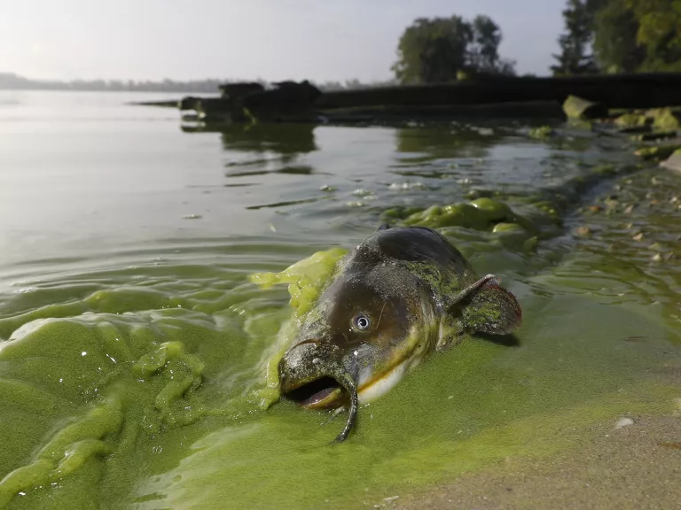
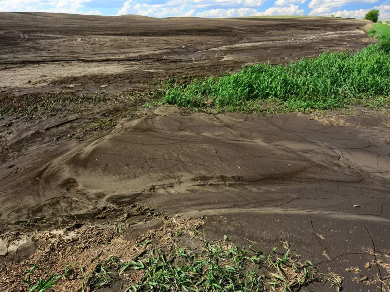
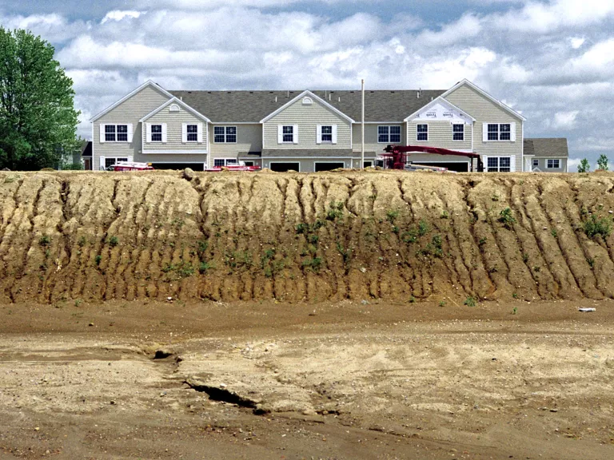
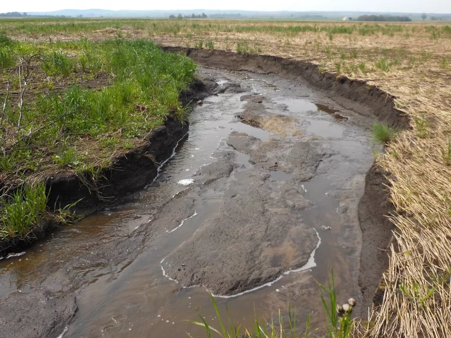
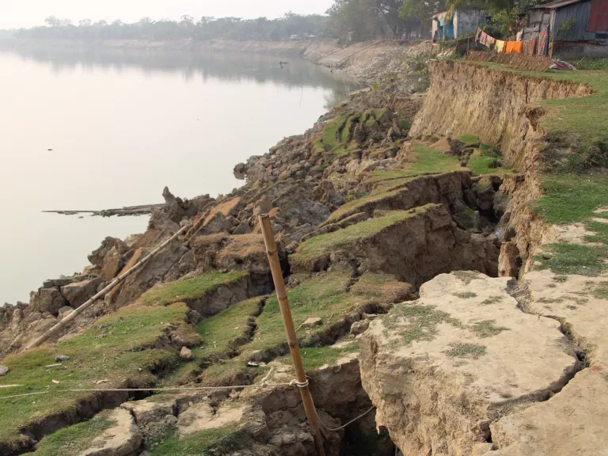
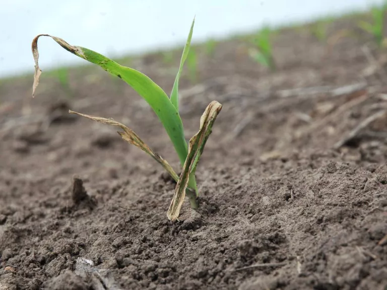
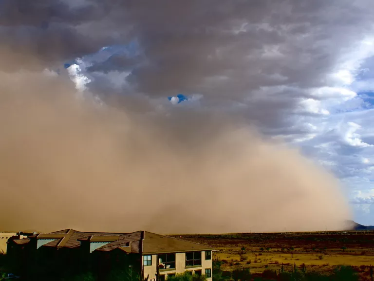
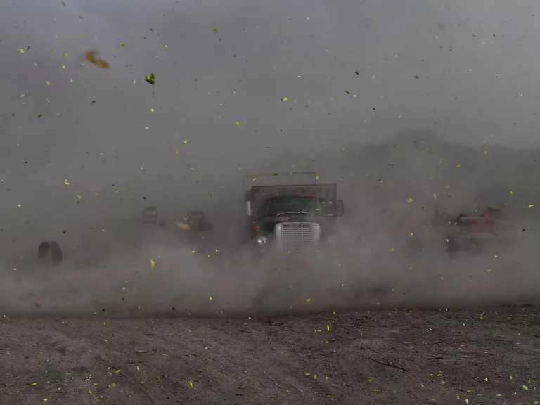
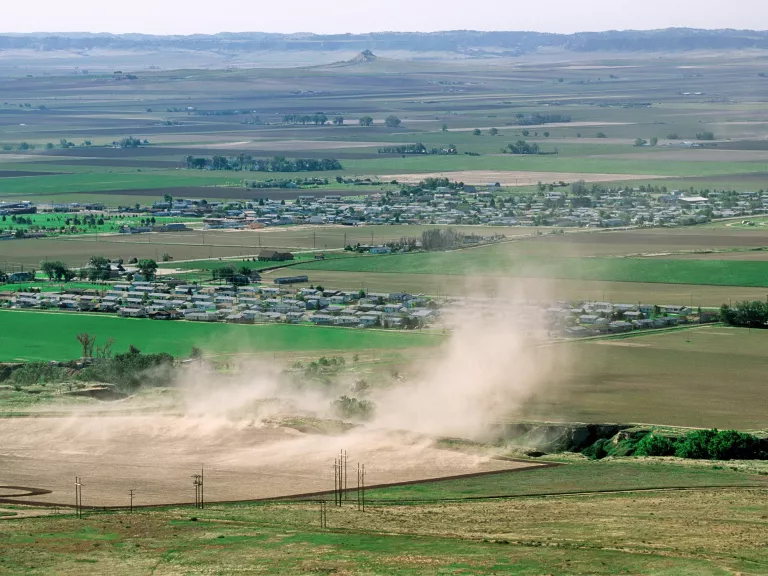

The loss of topsoil to wind, rain, and other forces is a natural process, but when intensified by human activity, it can have negative environmental, societal, and economic impacts.
Erosion is a geological process in which earthen materials (i.e., soil, rocks, sediments) are worn away and transported over time by natural forces such as water or wind; sometimes this is sped up by poor management or other human impacts on land. The natural process of river erosion, in fact, created the Grand Canyon, as the Colorado River cut deep and wide through the rock over millions of years, and glacial erosion carved Yosemite National Park's iconic landscape. (The difference between weathering and erosion is that in the process of weathering, materials are worn away but not transported. And erosion is the opposite of deposition, when natural forces leave earthen materials behind.)
Soil erosion refers to the erosion of the top layer of dirt known as topsoil, the fertile material vital to life. The rate of soil erosion depends on many factors, including the soil's makeup, vegetation, and the intensity of wind and rain. Because our own activities can also influence the speed of soil erosion, we have the power (and the responsibility) to solve one of the planet's greatest environmental challenges.
Soil erosion occurs primarily when dirt is left exposed to strong winds, hard rains, and flowing water. In some cases, human activities, especially farming and land clearing, leave soil vulnerable to erosion. For example, when farmers till (plow) the soil before or after growing a season of crops, they may leave it exposed to the elements for weeks or months. The overgrazing of farm animals like cattle and sheep can also leave large areas of land devoid of ground-covering plants that would otherwise hold the soil in place. Another practice that has devastating consequences for soil health is deforestation, particularly clearcutting , a widespread practice of the industrial logging industry. When trees are cleared away, the land is left exposed to wind and rain without the security of roots to prevent the soil from being swept away.
Climate is also a major driver of erosion. Changes in rainfall and water levels can shift soil, extreme fluctuations in temperature can make topsoil more vulnerable to erosion, and prolonged droughts can prevent plants from growing, leaving soil further exposed.
Soil erosion reduces the quantity and the quality of soil ecosystems and arable land (land that can be used to grow crops). Scientists estimate that in the Midwest, home to some of America's most productive farmland, half of all topsoil loss has occurred in the last 50 years due to erosion intensified by human activity. According to the NRCS, cropland across Iowa has lost an average of 6.8 inches of topsoil since 1850. And soil erosion in the United States costs the country about $37.6 billion in productivity losses each year. Unmitigated, severe soil erosion can result in the loss of food crops, negatively impact community resiliency and livelihoods, and even alter ecosystems by reducing biodiversity above, within, and below the topsoil.
Where does the soil go? According to agriculture researchers , about 60 percent of soil that is washed away ends up in rivers, streams and lakes, along with whatever has been applied to that soil, including agrochemicals and other pollutants that can contribute to harmful algal blooms and polluted waterways. Dirt that enters water bodies can also clog their natural flow and increase flooding along the waterways. Soil that doesn't make it all the way from farm fields to waterways can end up being deposited in neighboring areas.
Water erosion occurs when rain or snowmelt displaces the soil on the ground. The more water flowing over the land, the more soil particles are moved or transported away. Land that has no vegetation—including farm fields that are left barren after crop harvest—are especially vulnerable to water erosion. Since there's no vegetation to absorb the water, hold dirt in place, or break up the energy of falling raindrops, a rainstorm leads to increased runoff and erosion. Intense weather events (heavy rains, flash floods, and rapid snowmelt) can lead to more rapid soil erosion.
In 2019 the Midwest saw weeks of intense spring rainstorms that left large parts of the region under water and eroded the famously fertile landscape. A farmer in northern Missouri described the scenes to a news outlet : “I have seen water flowing across the fields washing soil away. . . I've seen sand in fields . . . A lot of farms are really badly impacted.”
For water to cause erosion and harm to farm fields, several factors come into play. Damage is more likely to occur if a great deal of rainfall and water runoff flows over the land during storms. Soil type, quality, and texture—the combination of soil particle size and how loosely or densely the particles are compacted—also influence the erodibility of a field's soil. Other factors are the length and slope of a piece of land, which can affect the speed and strength of water runoff. (That's one reason farms built on steep hillsides—often as a result of limited arable land—can be susceptible to devastating soil erosion and washouts.)
Vegetation—typical cropping as well as the strategic use of cover crops—can buffer the impact water has on a farm field. Land managers may also mitigate soil erosion through selective tillage practices. Typically, farmers till their soils to prepare fields for seed planting, control weeds, and retain moisture. But decades of agricultural research has revealed that a less-is-more approach may be the best way to minimize soil erosion. In other words, reducing mechanical disturbance to farm fields may help preserve soil.
Water, though vital for life and agriculture, can be incredibly corrosive. Every raindrop splash has the potential to impact the structure of soil. Below are four common types of water erosion.
Sheet erosion-the removal of soil in thin, uniform layers (sheets) by raindrop impact and shallow surface water flow. Sheet erosion can sometimes be difficult to detect unless the soil is deposited nearby or if the damage is already severe. This erosion process removes the fine soil particles that contain most of the important nutrients and organic matter.
Rill erosion-a type of erosion that results in small yet well-defined channels—typically smaller than gully erosion channels. After some time, rill erosion may fade away or, in more serious cases, be smoothed over with tilling.
Gully erosion-the washing away of soil through deep grooves or channels across unprotected land. Gully erosion can refer to soil being washed away through human-made drainage lines or describe the process of soil traveling through grooves created by hard rains. Farmers will typically fill these grooves back in with fresh soil as a temporary solution . As seen across the Midwest in 2019, gully erosion can hinder the ability to plow fields and grow crops.
Bank erosion-the progressive undercutting, scouring, and slumping of natural rivers and streams as well as man-made drainage channels by the intense movement of water. When land managers remove vegetation or ranchers allow their livestock to overgraze the land near streams and riverbanks, it can exacerbate the problem. Bank erosion represents a serious threat to lands around the globe. For example, the claylike soil of southwestern Bangladesh is particularly vulnerable to erosion during the rainy season. Every year, riverbank erosion displaces tens of thousands of people and has a devastating impact on regional farming.
The effect of soil loss depends on the type and depth of the topsoil that has been washed away. As topsoil is lost, the ability of the remaining soil to hold nutrients and moisture is diminished—which can greatly reduce crop emergence, growth, and yield. Some seriously eroded soils are not usable for crop production at all. Erosion can also reduce the soil's ability to absorb water, which can result in flooding and create large areas of standing water. If areas remain flooded during the planting season, it can delay or impede the planting of new crops.
Water erosion can also have dire consequences beyond farm fields: The devastating series of floods that caused destruction in much of the Midwest in 2019sent record volumes of agricultural runoff into waterways. The enormous amounts of fertilizer and agrochemicals contributed to a larger-than-usual “dead zone” in the Gulf of Mexico.
The impacts of excess fertilizer can be disastrous for aquatic systems as well as public health. Each summer, high levels of manure and fertilizer are responsible for harmful algal blooms that not only kill marine life by depleting oxygen in the water but leave fresh water undrinkable and unsafe for recreation. In 2014, the 500,000 users of Toledo, Ohio's water system were told to avoid their tap water after officials discovered unsafe levels of toxins, caused by Lake Erie algal blooms, at a city water treatment plant.
Wind erosion is a natural process that moves loose soil from one location to another. Very strong winds, in fact, can form large, destructive dust storms. In drier regions of North America, millions of tons of soil are lost to wind erosion annually. In October 2020, a huge dust storm, visible from space, moved across the Great Plains, from Colorado into Nebraska and Kansas. One study found that dust storms have become more common and more intense over the past 20 years due to frequent droughts and the expansion of croplands.
Soils types that are loose, dry, and finely granulated are less desirable for farmland, as these qualities create smooth surfaces and increase erodibility. On the other hand, soil structure—roughness, clumps, and ridges—can help absorb wind energy and reduce erosion. Fields that are covered with vegetation or bordered by shrubs and trees (also known as shelterbelts) are also much less vulnerable, as the plants can help block wind. Last but not least, climate plays a big role in wind erosion: Studies suggest that a warmer climate would bring a greater risk of wind erosion on arid and semiarid lands.
Like water erosion, wind erosion can harm the fields where it picks up soil, as well as the areas where the dirt—and whatever minerals and contaminants it includes—are deposited. It can also have health impacts: worsening air quality, obscuring visibility, and causing people to experience breathing difficulties. Below are some examples of the effects of wind erosion on farmland.
Crop damage:When wind causes soil to become airborne, the blowing soil can sandblast delicate leaves and stems or even bury plants and seeds, resulting in decreased crop yields.
Dust storms:When dry, loose soil particles are suspended in the air, large dust storms can form and last for several hours. These storms can damage crops, harm livestock, and cause a variety of serious human health problems, including asthma attacks and dust pneumonia.
Adverse operating conditions: Dust storms can damage or impede the use of farm equipment and make it unsafe for agricultural workers to be in the fields.
Chemical drift: Wind can cause pesticides, herbicides, fertilizers, and various other agriculture chemicals to become airborne and move far beyond the intended area of application. This can be especially problematic for farmers trying to decrease chemical overuse on their fields, and for communities that live near farmland where many agrochemicals are applied.
Many communities across the United States have been experiencing firsthand the tragic consequences of climate change, including more frequent flooding, longer wildfire seasons, more intense droughts, and coastal erosion due to sea level rise. And climate change is already impacting farming practices, even some that farmers have used for millennia. Here's how climate changes worsen the impacts of erosion.
In addition, soil erosion can drive climate change. Soil is a vast storage center for carbon dioxide, organic matter, and microbes. But when soil becomes degraded—as through deforestation and poor farming practices—it can release carbon back into the atmosphere. The loss of healthy soil—by wind and water erosion, poor management, wildfire, or other means—represents the loss of one major tool we have to fight climate change.
Soil erosion is essentially a battle between two forces: flowing water or wind versus the gravity that holds soil in place. The ability of soil to stay put relies on how well we work to eliminate or minimize the erosive forces and maximize soil stability.
Below are some common strategies for effective erosion control, many of which are part of the philosophy of regenerative agriculture. It's worth noting that finding appropriate erosion-control treatments relies on understanding which specific erosion processes are at play.
Cover cropping is a centuries-old farming practice that can help boost soil health and protect soil from erosion forces. A cover crop isn't planted to be harvested—it's planted when the soil would normally otherwise be bare, after the cash crop is grown. The primary function is to protect the soil by keeping it on the ground and maintaining living roots in the soil.
But cover crops have a number of additional benefits. They provide nutrients to the soil, reducing the amount of artificial and costly inputs a farmer would otherwise need to add. They increase biodiversity and reduce bacterial and fungal diseases that could harm soil health. They even fight climate change through carbon sequestration: As plants take carbon dioxide from the atmosphere to create organic matter, the soil, in turn, provides storage for the carbon, serving as what's called a carbon sink.
Common types of cover crops include legumes, grasses, buckwheat, brassicas, and rye—some of which can provide an additional revenue stream for farmers and ranchers. While cover crops are slowly becoming more popular, they currently account for less than 5 percent of cropland in the United States.
The next time you are out walking or driving, take a moment to appreciate the soil. You may even want to plan a little celebration for World Soil Day (December 5) and give thanks to the dirt that's keeping it all together for life on Earth.